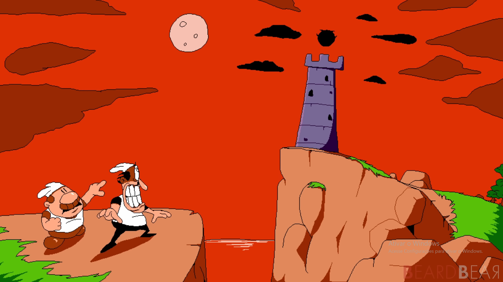
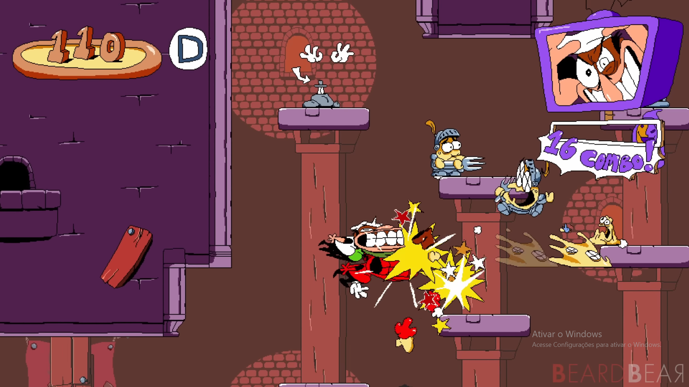
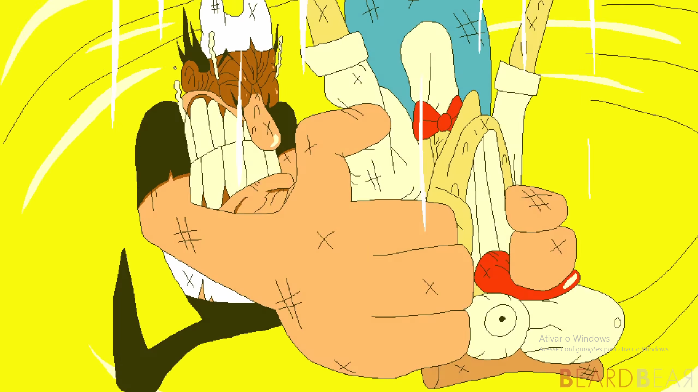

Sobre o jogo:
Pizza Tower é um jogo de plataforma 2D extremamente
rápido, protagonizado por Peppino Spaghetti, um pizzaiolo que precisa
invadir e destruir o monopólio da Pizza Tower.
A história começa quando Peppino descobre que a Pizza Tower está
prestes a destruir sua pizzaria. Desesperado para salvar seu
restaurante, ele entra na torre e atravessa seus diversos andares,
enfrentando criaturas e personagens estranhos enquanto tenta chegar ao
topo.
Imagens:


Gameplay e Trailer:
Trilha sonora:
- Nome da faixa: Oregano Mirage.
- Número da faixa: 26.
- Nome da faixa: Good Eatin'.
- Número da faixa: 45.
- Nome da faixa: Don't Preheat Your Oven Because If You Do The Song Won't Play.
- Número da faixa: 56.
Informações:
- Lançamento: 2023
- Desenvolvedora: Tour De Pizza
- Publicadora: Tour De Pizza